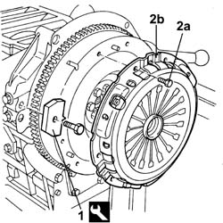
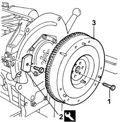
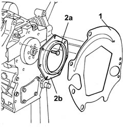
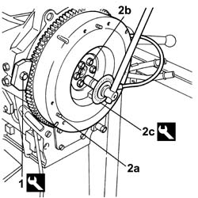
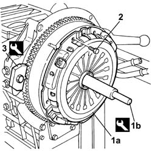
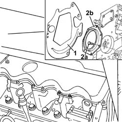

1020D30 OIL SEAL COVER, FLY WHEEL SIDE - R + R AND REPLACE SEALS
- Path
- Procedures > 10 ENGINE UNIT > 1020 CRANKCASE SUMP AND COVERS > 1020D OIL SEALS ON CRANK SHAFT > 1020D30 OIL SEAL COVER, FLY WHEEL SIDE - R + R AND REPLACE SEALS
- Kind
- repair procedure (removal / refitting; the operation number is the code)
- Applies to
- engines: 2.8 JTD 8V; all production periods
- Interactive page
- https://sloeber94.github.io/elrnDB-fDct/en/#/244000669
Applies to: all engines; all production periods
 Removing
Removing
 Refitting
Refitting1. Fit the tool.
 | Description | Code | Function |
|---|---|---|---|
1 | Counter-torque | 1.860.741.000 | Tool for preventing crankshaft rotation |
2. Undo the bolts (2a) and remove the clutch (2b).

Applies to: all engines; all production periods
1. Undo the flywheel fixing bolts.
2. Remove the tool.
| Description | Code | Function |
|---|---|---|---|
2 | Counter-torque | 1.860.741.000 | Tool for preventing crankshaft rotation |
3. Remove the flywheel.

Applies to: all engines; all production periods
1. Remove the protective cover.
2. Undo the bolts (2a) and remove the crankcase rear cover (2b) with the oil seal incorporated.

Applies to: all engines; all production periods
Refitting
Removing- Fit the protective cover.
- Fit the crankcase rear cover with the oil seal incorporated and tighten the fixing bolts to the recommended torque.
 | Value - daNm | Fastening | Component | Ø |
|---|---|---|---|---|
. | (engine crankcase side) 2.5 | Bolt | REAR COVER CRANKSHAFT | M8 |
1. Fit the tool.
| Description | Code | Function |
|---|---|---|---|
1 | Counter-torque | 1.860.741.000 | Tool for preventing crankshaft rotation |
2. Fit the flywheel (2a), apply thread-locking agent to the bolts (2b) and tighten them to the recommended torque using the angular tightening tool (2c).
 | Description | Qty. | Component | Type | Classification |
|---|---|---|---|---|---|
2b | LOCTITE 573 | FLYWHEEL (MECH.) | Thread locking agent |
| Value - daNm | Fastening | Component | Ø |
|---|---|---|---|---|
2b | (engine crankshaft side) 2.7 -3.3 + 90° | Bolt | FLYWHEEL (MECH.) | M12 |
| Description | Code | Function |
|---|---|---|---|
2c | Torque wrench | 1.860.942.000 | Flwheel retaining bolt tightening |

Applies to: all engines; all production periods
1. Fit the clutch (1a) using the tool (1b)
| Description | Code | Function |
|---|---|---|---|
1b | Clutch locating tool | 1.870.402.000 | Clutch installation |
2. - Tighten the fixing bolts to the recommended torque.
| Value - daNm | Fastening | Component | Ø |
|---|---|---|---|---|
2 | (Engine crankshaft side) 13.6 -16.8 | Bolt | CLUTCH ASSEMBLY | M12 |
3. Remove the tool.
| Description | Code | Function |
|---|---|---|---|
3 | Counter-torque | 1.860.741.000 | Tool for preventing crankshaft rotation |

Applies to: engines: 2.8 JTD 8V; all production periods
Removing
Refitting1. Remove the protective cover.
2. Undo the fixing bolts (2a) and remove the flywheel side oil seal cover.

Applies to: engines: 2.8 JTD 8V; all production periods
Refitting
Removing- Fit the flywheel side cover with the oil seal incorporated in place.
- Tighten the fixing bolts and check the torque.
| Value - daNm | Fastening | Component | Ø |
|---|---|---|---|---|
. | (engine crankcase side) 2.5 | Bolt | REAR COVER CRANKSHAFT | M8 |
- Fit the protective cover.